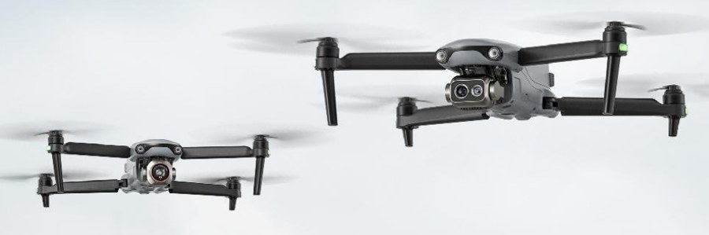

EVO Lite Enterprise
Компактный мультиротор для мониторинга и инспекции
- Камера
- 6K
- Тепловизор
- 640×512
- Дальность видеопередачи
- 12 км
- Время полёта
- 40 мин
Все характеристики
| Камера | 6K |
|---|---|
| Тепловизор | 640×512 |
| Дальность видеопередачи | 12 км |
| Время полёта | 40 мин |
| Обход препятствий | Трёхстороннее бинокулярное зрение |
| Распознавание целей | ИИ-распознавание и позиционирование |
| Особенности | Лёгкий и портативный, простое управление |
ЦенаПо запросу